The Danish Kollektiv
Where do people live collectively in Copenhagen, and in what kinds of homes?
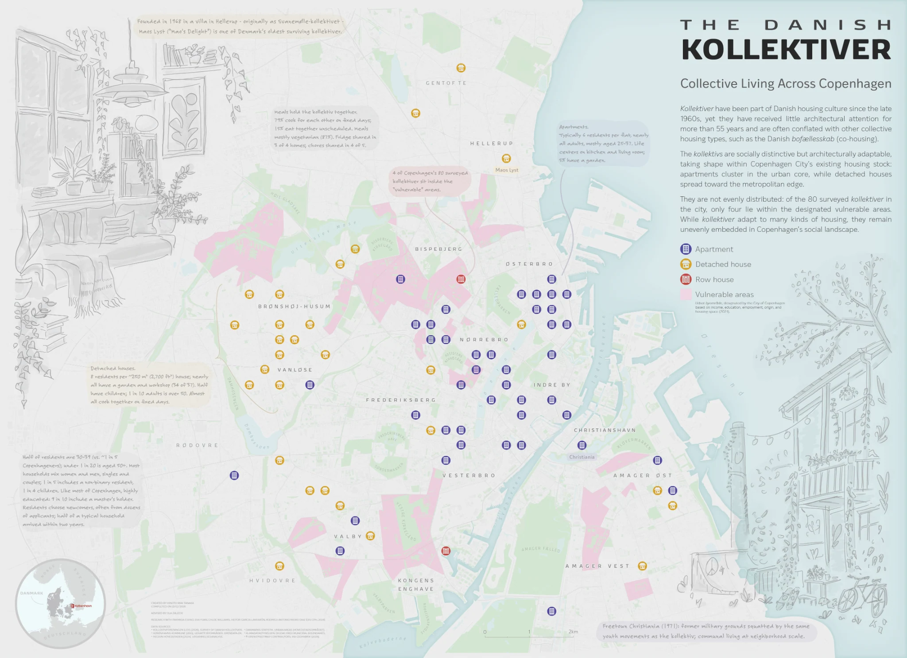
At a glance
- Context
- Living kollektiv – Cartographies of the Nordic Residential Commune in Copenhagen, a research project at DIS Copenhagen, Spring 2026. The map work continued as a poster for NACIS 2026 in Milwaukee and a national interactive map for ICSA 2026.
- Team
- Supervised by Dr. Heitor Garcia Lantarón and Dr. Rodrigo Antonio Rieiro Diaz. Student researchers Parmida E., Eva Y., Chloe W. and me, with Kollektivforeningen, the Danish Association of Kollektiver.
- My part
- Data cleaning and joins, geocoding, spatial analysis, thematic maps, the interactive map, GIS documentation and the NACIS poster. The survey and wider research were shared work.
- Tools
- Excel, QGIS, Adobe Illustrator, qgis2web / Leaflet, GitHub Pages
- Data
- Survey: 125 responses in the Copenhagen Urban Area (10 Feb – 4 Mar 2026) · Location dataset: 108 kollektiver · Municipal boundaries: DigDag via Dataforsyningen
- Skills
- Data cleaning, joining without a key, GIS troubleshooting, exploratory mapping, multivariate symbols, basemap design, web mapping, documentation
Nobody has pinned down what a Danish kollektiv is as a building. Some are flats, some are villas, some are row houses. Our team set out to see whether there is a pattern anyway. My job was to make the data mappable, find out what the maps could honestly say, and then say it clearly. The clearest answer: apartment kollektiver cluster in the city core; detached-house kollektiver spread toward the edge.
How it was made
Behind the map
A housing type nobody has defined
Danish co-housing (bofællesskab) and the kollektivhus have had plenty of attention from architects. The urban kollektiv, where residents share a home and organize daily life together, has not. Our research asked whether it can be understood as a distinct architectural type, looking at three things: spatial (where, how big, what building), organizational (how residents share space and chores) and socio-economic (who lives there).
That shaped the maps from the start. There is no official list, so a kollektiv here is any household that calls itself one. And because kollektiver live in apartments, detached houses and row houses, the maps couldn't show one building form. They had to show relationships.
Where does Copenhagen end?
Kollektiver aren't confined to the municipality, so the study area couldn't be either. An early draft defined the urban area by a United Nations standard. I switched to the Copenhagen Urban Area as defined by Statistics Denmark, the national authority, and made it workable in QGIS through the 18 municipalities it intersects, using DigDag municipal boundaries.
Then the first surprise: the location dataset had 108 kollektiver inside that boundary, the survey had 125. Same project, two numbers.
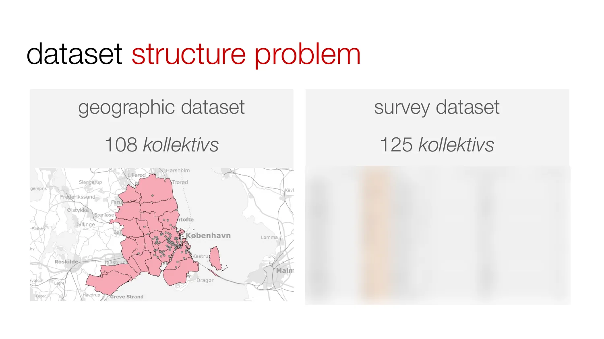
First, fix the file
The QGIS project I inherited opened once and then broke: source files weren't linked properly, and any work vanished when QGIS closed. Before any analysis, I traced the broken links, copied every source file into the project folder, and rebuilt the project from scratch. The result was a stable, reproducible workspace. Unglamorous, and the reason everything after it was possible.
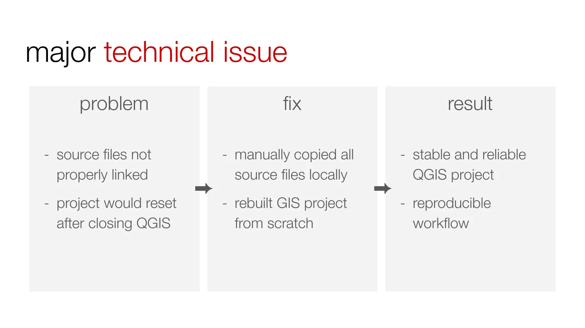
Two datasets, no shared ID
The survey and the location data had nothing in common to join on. Address matching needed an exact text match, and spelling, formatting and capitalization varied too much. Kollektiv names worked better: they connected most records and let the mapping move forward, at the cost of some errors.
The data had other problems. Eleven records had no name. About fifteen groups looked like duplicates: same name, same address, slightly different answers, roughly 22 likely extras. Some were repeat answers; others may be separate kollektiver in one building. I set the unnamed records aside for later address checks, flagged the duplicates instead of deleting them, and wrote the gaps down. Even after removing every likely extra, the counts didn't reconcile perfectly. I recorded that rather than forcing a table that only looked clean.
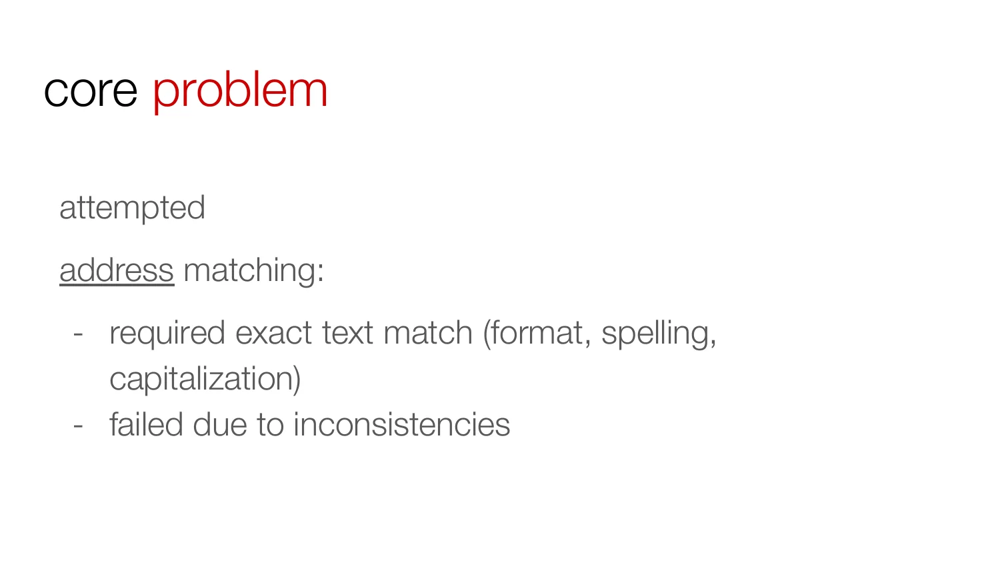
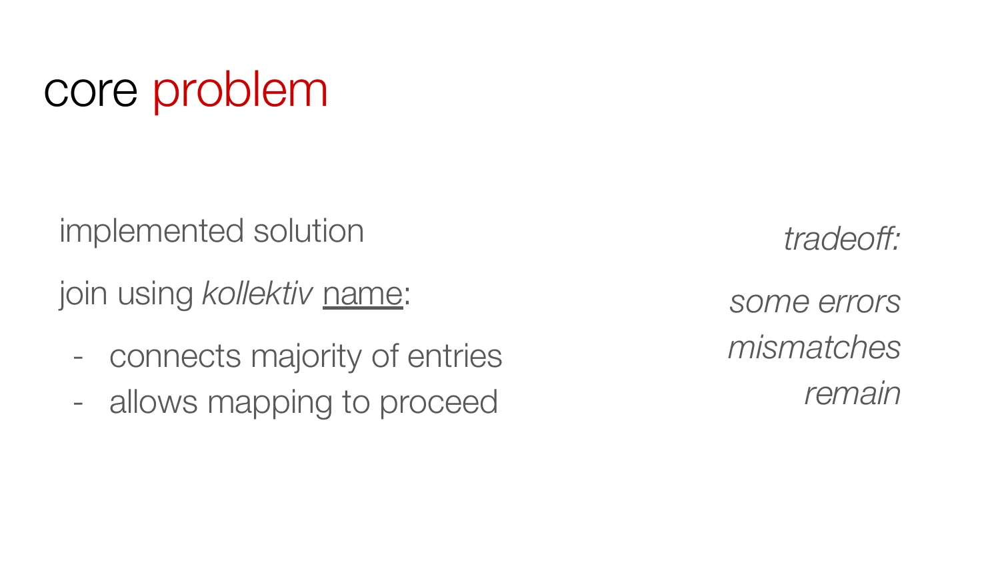
Ten maps to find one pattern
With a working dataset, I mapped survey questions one at a time: housing type, house meetings, housework, relationship status, gender, education, household size, home size, establishment year, diet. Each map asked two things. Is there a spatial pattern? And is there enough data to trust it? Several questions were answered by only 60 to 75 of the 108 kollektiver. Some showed no pattern at all.
One stood out immediately: apartments near the center, detached houses in the suburbs. That became the spine of everything that followed.
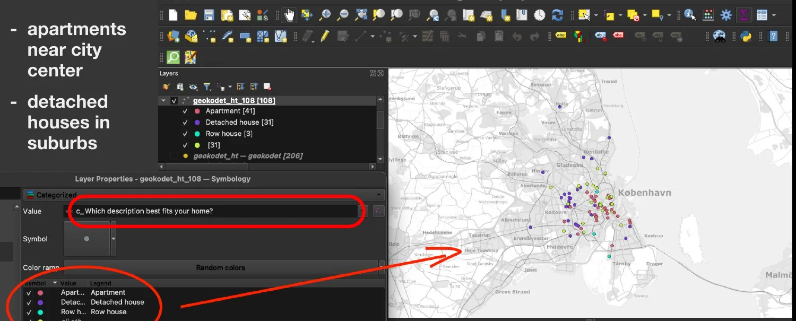
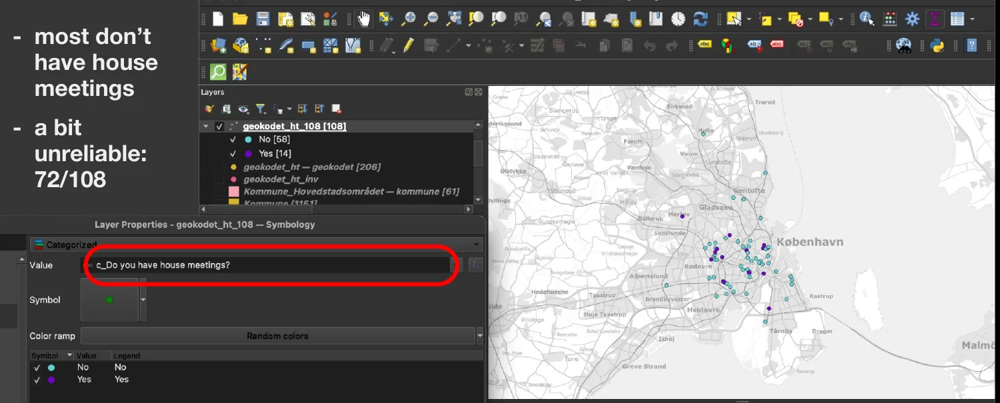
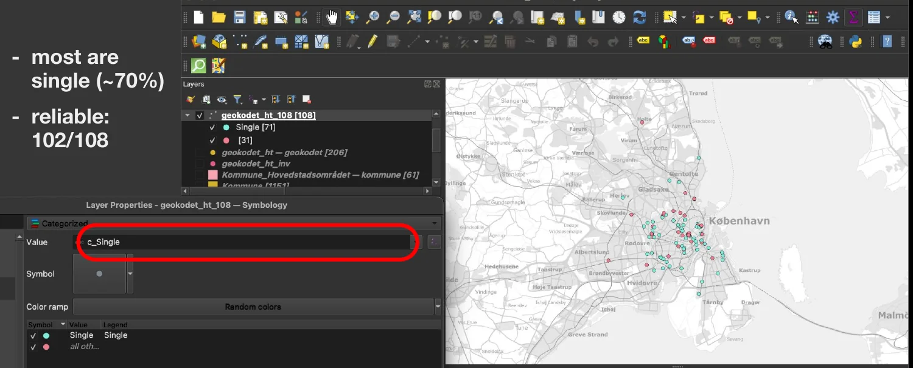
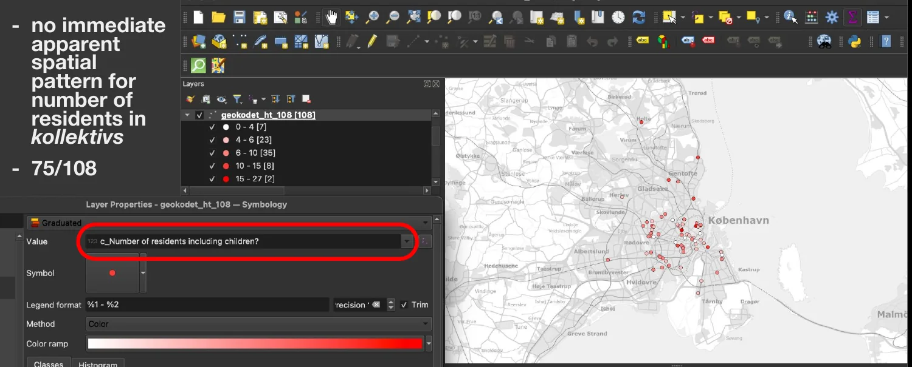
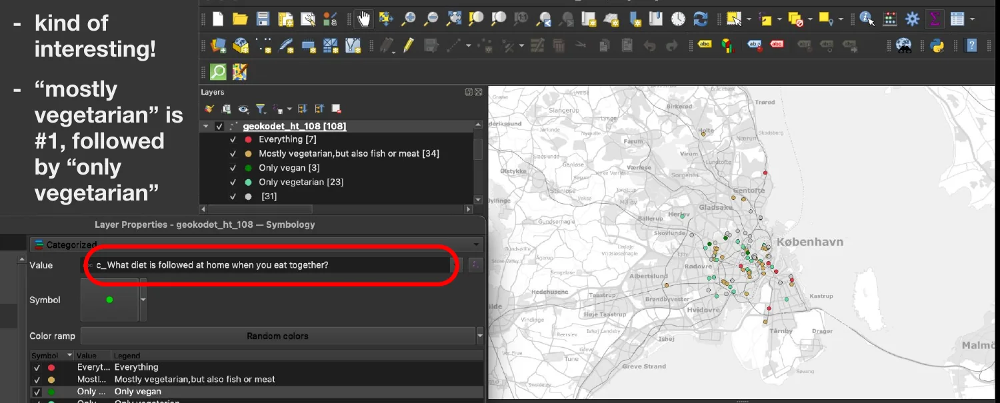
Four maps, four jobs
For the research paper, I narrowed the tests to four maps, each with one job and a symbol system matched to its data. Categories got hue and shape, ordered time got size, and two related quantities shared one symbol.
Housing type gave the clearest reading. Living space gave the most surprising one: a big house doesn't mean more room per person. Workshops and gardens turned up mostly outside the dense center, where detached houses have the land for them.
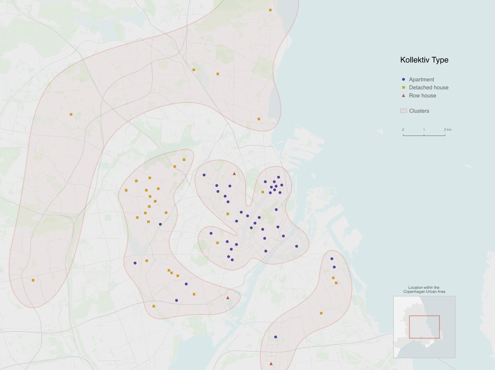
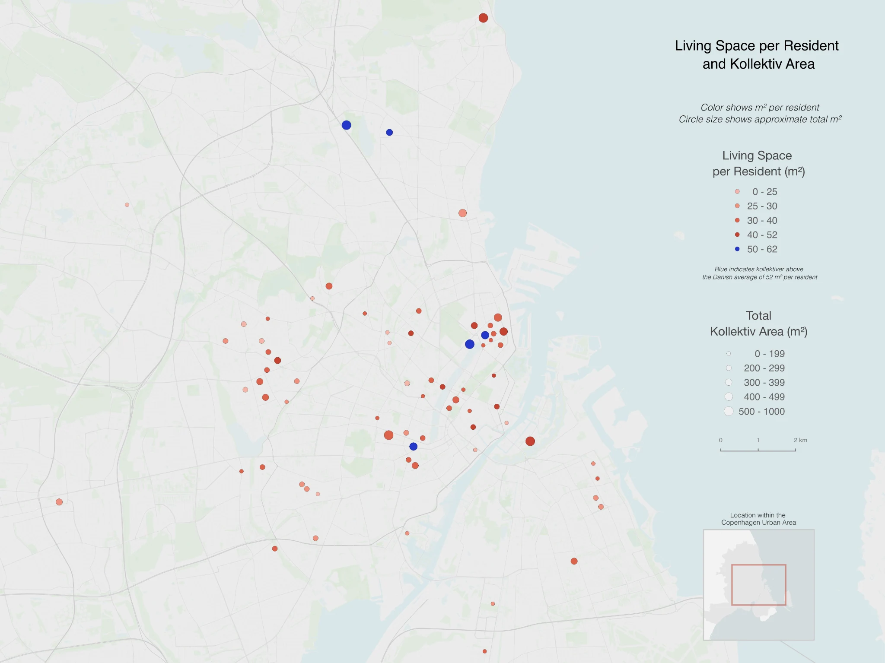
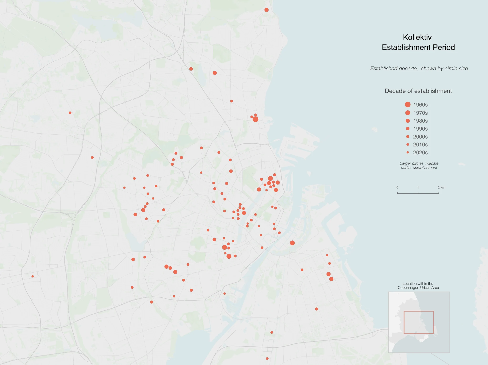
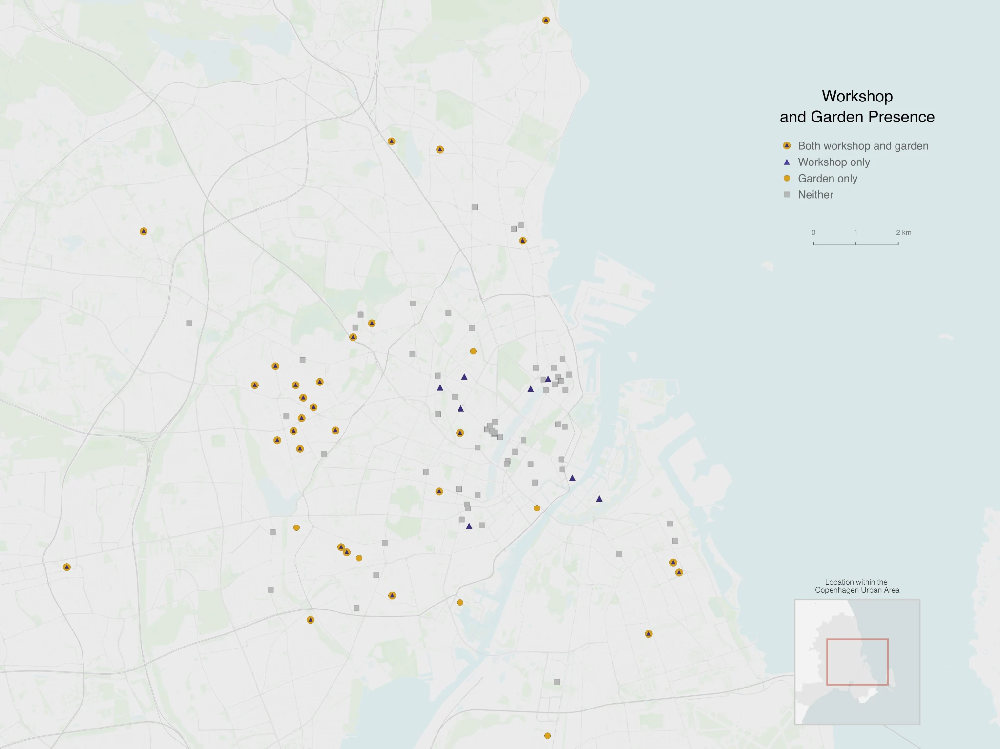
One argument for one poster
The research maps explore; a poster has to argue. For NACIS I zoomed in from the wider urban area to the City of Copenhagen, the 80 surveyed kollektiver within it, and built the poster around the strongest pattern I had: housing type. Apartments fill the urban core; detached houses spread toward the edge.
I tested adding a second dimension, but establishment year and the socio-economic answers didn't make an equally clear spatial argument. The one context layer that stayed is the city's designated vulnerable areas, in pink. Only four of the 80 kollektiver fall inside them. Survey findings that don't map well, such as shared meals and who lives there, went into short notes around the edge instead of onto the map.
A basemap that stays quiet
The city matters to the argument, because location is the point. But it can't compete with the data. I built a custom low-contrast basemap: pale grey streets, soft green parks, light blue water, district names in small spaced capitals. The kollektiv symbols are the only strong thing on the page. If the basemap, boundaries or inset ever out-shout the data, the map has failed.
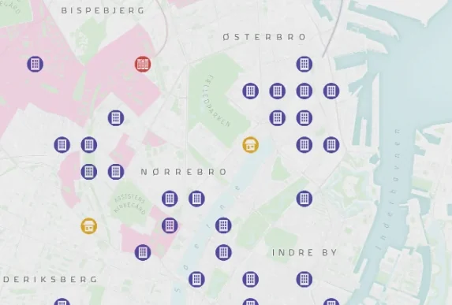
Symbols, names and two drawings
Each housing type has its own pictogram: an apartment block, a house, a row of houses. Readers can tell them apart without going back to the legend. Kollektiv names are left off: they'd clutter the map, and they'd point to people's homes. The exceptions are two places everyone already knows.
A map can show where kollektiver are, not what living in one feels like. So the poster pairs it with two drawings. One shows a kollektiv interior, next to the story of Maos Lyst, founded in 1968 in a villa in Hellerup and one of Denmark's oldest surviving kollektiver. The other shows Freetown Christiania, founded in 1971 on former military grounds by the same youth movements: communal living at the scale of a neighbourhood. They are context, not data, and the captions say so.
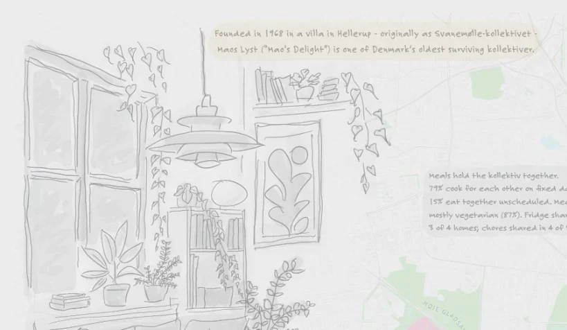
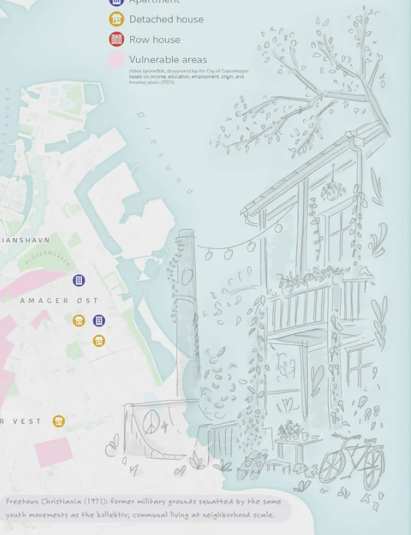
A national map, then offline
Kollektivforeningen asked me to map kollektiver across all of Denmark for ICSA 2026 in Germany. I built an interactive web map with QGIS and qgis2web/Leaflet and published it on GitHub Pages: a different kind of output from the poster, built for browsing rather than for one argument. Because it showed individual homes and respondents hadn't agreed to that, I took it offline after the conference.
The interactive map is no longer public.
Leaving it usable
The last thing I made was a GIS handoff, so the next researcher doesn't start over. It documents the folder structure and why paths must stay relative, the join logic and its history, a rule to flag rather than delete duplicates, what a data dictionary should record, and the cartographic reasoning behind each map, with sources the supervisors can cite. The project went from a broken file and two disconnected tables to an organized workspace in clear groups:
survey-data: the joined working datasetmap1-year,map2-type,map3-sqrm,map4-wkshp-grdn: one group per mapbase-mapandboundaries: context, kept quiet
What the data can't say matters as much. The records are self-identified, the join is partial, and the maps are not a census. They show patterns, not causes.
Credits & sources
- Living kollektiv – Cartographies of the Nordic Residential Commune in Copenhagen, DIS Copenhagen, Spring 2026. Supervisors: Dr. Heitor Garcia Lantarón, Dr. Rodrigo Antonio Rieiro Diaz. Student researchers: Parmida E., Eva Y., Chloe W., Hinoto Tanaka.
- In collaboration with Kollektivforeningen (the Danish Association of Kollektiver), which helped make the survey possible.
- Municipal boundaries: DigDag, via Dataforsyningen (Danish Agency for Climate Data). Study area: Copenhagen Urban Area, Statistics Denmark.
- Vulnerable areas on the poster: designated by the City of Copenhagen.
- Poster shown at the North American Cartographic Information Society (NACIS) Annual Meeting, Milwaukee, 2026. Interactive map made for ICSA 2026, Germany.